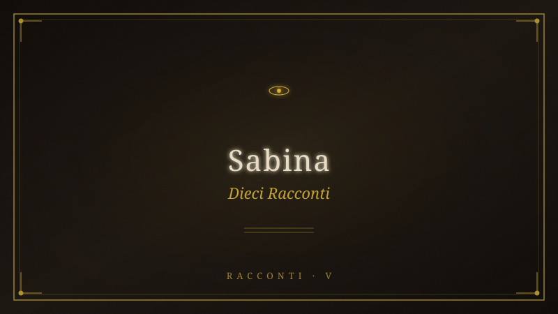

10 Racconti — Sabina#

Fonte: 10-racconti-sabina.pdf
10 RACCONTI — Il Viaggio nei Monti
Sabini
Ispirato a Monte T ancia, Pozze del Diavolo, Monte San Giovanni in Sabina
T ema conduttore: il viaggio, il freddo che rivela
- Il Sentiero della Deviazione
Monte San Giovanni in Sabina, l'Osteria del T ancia, le creste tra Monte Pizzuto e
Punta Ferretti.
L'Itinerrante lascia la Pianura in una mattina di luglio che sa di resina e di cose non
mantenute.
Nessuno lo saluta. La Pianura non saluta chi se ne va: continua a ronzare, a
comprare, a inginocchiarsi davanti ai suoi schermi accesi. È un luogo dove la luce
non si spegne mai, e proprio per questo nessuno vede più niente: dove tutto è
mostrato, niente appare. La Pianura non nasconde i suoi crimini — li pubblica, li
illumina, li commenta; e la spiegazione è la sua forma più educata di oblio. Il suo
occhio non dorme e non giudica: conta. Conosce di ogni abitante il passo, lo
sguardo, l'acquisto, il silenzio, e delle infinite cose che sa, nessuna è un nome vero.
Ha parole per ogni cosa, la Pianura, e ogni parola è una porta murata: danno
collaterale, dove morivano bambini; flessibilità, dove si perdevano le case;
sicurezza, dove cresceva l'occhio.
La chiamano vita. Ma la vita è ciò che resta quando smetti di essere un ingranaggio.
L'Itinerrante non fugge. Chi fugge crede ancora al gioco: corre lungo il tabellone, e il
tabellone è fatto anche di vie di fuga. Lui ha compiuto l'unico gesto che il tavolo non
contempla — si è alzato. Porta poco: uno zaino, un bastone, e un debito che non
pesa niente e non lo lascia mai: il nome di una donna, tagliato una sera da un
documento, per ragioni di spazio, con il gesto con cui si toglie una virgola.
Lungo la Via T ancia il bosco si chiude alle sue spalle come una porta che nessuno
potrà più aprire dall'esterno. Gli uliveti tremano d'argento. Il T evere, in fondo alla
valle, luccica come una vecchia cicatrice — e l'Itinerrante non sa perché, ma
guardandolo pensa a un altro fiume, a un'altra valle stretta fra due fiumi, a un uomo
in fuga che cercava l'immortalità e trovò un serpente.
Scaccia il pensiero. Non sa ancora che è il pensiero a portare lui.
A Monte San Giovanni in Sabina — pietre medievali, una torre, una cinta muraria,
echi di anime che scappavano dai barbari mille anni fa, e prima dai romani, e prima
da qualcosa che non aveva ancora nome — l'Itinerrante trova Silvano.
Silvano non ha età. La sua faccia è un crinale segnato da corsi d'acqua asciutti. Vive
in una casa di pietra, coltiva un orto che non forza, parla quando le parole servono e
tace quando il silenzio dice di più. I suoi occhi non ti guardano: ti attraversano —
come l'acqua attraversa la roccia, senza fretta, per millenni, finché non la spezza.
Quando l'Itinerrante arriva, Silvano è seduto fuori, su una pietra che sembra lì da
prima del borgo. Sta fermo. Non aspetta niente. È lì, e la sua presenza riempie lo
spazio senza occuparlo. Lo osserva per un tempo che non si misura in minuti — e in
quell'osservare c'è qualcosa che nessuna logica della Pianura contiene: guarda
l'Itinerrante come si guarda qualcuno che si è già incontrato.
«Ci conosciamo?» chiede l'Itinerrante.
«Da più tempo di quanto credi.» Poi, dopo un silenzio che ha la pazienza della pietra:
«Hai perso il tuo nome.»
«Mi chiamo—»
«Quello te l'hanno dato. Insieme alla data di nascita, al codice, al punteggio di
affidabilità, al profilo. Ti hanno dato tutto, e tu hai detto grazie. Parlo dell'altro nome.
Quello di prima. Quello che avevi quando eri intero. T e lo ricordi?»
L'Itinerrante non risponde. Ma il corpo sì: un tremore, un nodo alla gola, qualcosa
che cede dietro gli occhi.
- La Lingua di Ghiaccio
Osteria del T ancia, versante est, primo tratto di cresta.
L'Itinerrante cammina da tre ore quando incontra la prima lingua di ghiaccio.
Non dovrebbe esserci, a luglio, su queste altitudini. Eppure la sente prima di
vederla: l'aria che cambia consistenza, che si fa più densa, più viva, come se
qualcosa stesse trattenendo il respiro intorno a lei. Poi la scorge: una striscia bianca
che scende dal bosco come un dito che indica qualcosa, e quel qualcosa non sei tu
ma ciò che porti.
Si avvicina. Il ghiaccio non è trasparente: è opaco, lattiginoso, e dentro — come
mosche nell'ambra — ci sono parole. Parole scritte, stampate, incise su carta che il
ghiaccio ha preservato. Legge: nome, cognome, data di nascita, codice, punteggio,
affidabilità, profilo. Stringhe alfanumeriche. Frasi di contratto.
La Pianura ha congelato le sue parole e le ha spinte quassù, perché non se ne
perdesse traccia.
Ma questo ghiaccio non parla alla memoria della Pianura. Parla a un'altra memoria,
più antica, che non ha bisogno di parole per conservare. L'Itinerrante posa una mano
sulla lingua glaciale e sente — attraverso il freddo che sale lungo il braccio —
qualcosa che si scioglie dentro di lui. Lacrime che non sapeva di avere. La Pianura
non ti insegna a piangere: ti insegna a produrre.
Il ghiaccio è la trappola della Pianura: conserva tutto, ma conserva nel modo
sbagliato. Conserva come un museo conserva una farfalla morta: perfetta, immobile,
senza più il volo.
«Non è tuo», dice una voce alle spalle.
L'Itinerrante si volta. Un uomo emerge dal bosco. Non è Silvano: è più giovane, ma i
suoi occhi hanno la stessa trasparenza opaca del ghiaccio. Porta una bisaccia e un
bastone nodoso.
«Quelle parole non sono tue. La Pianura le ha prese in prestito da te, e ora le ha
congelate per farle durare. Ma ciò che è congelato non vive. T u sei vivo, per ora.»
«Chi sei?»
«Qualcuno che ha smesso di sciogliersi. Io le mie parole le ho lasciate andare. Il
ghiaccio ancora le tiene, ma non le rivoglio più. Le parole che contano non si
scrivono.»
Indica il cielo, che sopra le creste si sta facendo di un azzurro così puro da sembrare
finto, come un fondale dipinto.
«Lassù non c'è ghiaccio. C'è solo spazio. Il ghiaccio della Pianura arriva fino ai mille
metri, ma oltre comincia un altro regno. Oltre comincia la trasparenza.»
L'Itinerrante ritira la mano. Il palmo è bianco dal freddo, ma sente che dentro —
sotto la pelle — qualcosa si è sbloccato. Come un ingranaggio che ha ricominciato a
girare dopo anni di fermo.
Si rimette in cammino. Il ghiaccio resterà lì a custodire parole che non gli servono
più. La salita continua.
- Le Pozze Sotto la Crosta
Fosso di Galantina, ai piedi del Monte T ancia, Pozze del Diavolo.
Le Pozze del Diavolo non sono ghiacciate. L'Itinerrante le raggiunge dopo una
discesa ripida tra faggi e massi coperti di muschio, e l'acqua che vede è verde
smeraldo, fluida, viva. Saltella tra le rocce, si tuffa in vasche naturali, spumeggia,
ride.
Ma c'è qualcosa che non torna.
Ogni pozza, sul fondo, ha uno strato di ghiaccio. Trasparente come vetro,
sottilissimo, e sotto quel ghiaccio — qualcosa si muove. Non pesci, non alghe. Forme
che l'occhio non mette a fuoco, ombre che cambiano direzione, ricordi che non sono
di nessuno. La pozza è viva in superficie, e il ghiaccio sul fondo è come una retina
che trattiene le immagini di tutto ciò che vi è caduto dentro.
L'Itinerrante si inginocchia sulla riva. La roccia è calda di sole. Il contrasto lo
disorienta: caldo sopra, freddo sotto, vita in superficie, memoria sul fondo.
Una voce di donna, alle sue spalle. Non la vede, ma la sente come si sente l'acqua
quando ancora non hai raggiunto la sorgente: ne percepisci l'esistenza prima di
berla.
«Non toccare il fondo. Il ghiaccio trattiene ciò che è stato, e se lo rompi, i ricordi
escono. Non sai cosa potrebbero fare, una volta liberi.»
«E tu come lo sai?»
«Perché l'ho rotto, una volta. Ho messo le mani nell'acqua gelata e ho afferrato il
ghiaccio. L'ho rotto con i pugni, e i ricordi sono usciti come vespe da un nido
calpestato. Mi hanno punto per giorni. Settimane. Ogni ricordo che non era mio mi
entrava nella pelle e mi costringeva a viverlo.»
«E ora?»
«Ora guardo. Non tocco più. Il ghiaccio custodisce. È il suo compito. Non distruggere
il custode solo perché la prigione ti sembra ingiusta. Il ghiaccio congela perché
qualcosa, un giorno, possa essere scongelato nel momento giusto. Non ora.»
L'Itinerrante guarda la pozza. Vede il suo riflesso sulla superficie — e poi, sotto,
attraverso il velo di ghiaccio, intravede un altro riflesso: un volto diverso, più
giovane, più intero. Il volto che aveva prima che la Pianura lo limasse.
Si chiede se l'acqua trattenga il vero o solo una possibilità. Ma forse non c'è
differenza.
- Cristallo e Resina
Crinale tra Monte Pizzuto e Monte Menicoccio.
Lassù, dove il vento spazza via ogni suono e lascia solo il fruscio delle proprie
orecchie, l'Itinerrante trova una radura circolare. Al centro, un albero morto — un
faggio colpito dal fulmine, bianco come osso, i rami tesi verso il cielo come le dita di
qualcuno che è morto cercando di afferrare qualcosa.
Dai rami pendono cristalli di ghiaccio. Ma non sono normali stalattiti: hanno la forma
di gocce fermate a metà della caduta, come se il tempo si fosse bloccato intorno a
loro. Ogni goccia contiene qualcosa: una lettera, una parola, un frammento di frase.
Non, mai, sempre, forse. Avverbi senza verbi, aggettivi senza nomi, resti di un
discorso interrotto.
Sul tronco, invece, cola resina. Antica, indurita, ambrata. Intrappola insetti, polline,
piccole foglie. La resina è il ghiaccio della terra — conserva allo stesso modo, ma
con una differenza: la resina è viva, anche quando è secca. Viene dall'albero, dalla
linfa, da qualcosa che scorre ancora sotto la corteccia. Il ghiaccio viene dal cielo,
dall'esterno, da ciò che avvolge.
L'Itinerrante spezza un cristallo. Il ghiaccio si frantuma con un suono secco, e le
parole che conteneva evaporano nell'aria — non scompaiono, ma diventano
invisibili, come l'alito in inverno.
T occa la resina. È morbida, quasi calda. Sotto la punta del dito sente il movimento
lento, geologico, del tempo che diventa sostanza.
«La differenza», mormora tra sé, «è che la resina viene da dentro. Il ghiaccio viene
da fuori.»
Capisce che il suo viaggio è anche questo: imparare a distinguere ciò che è resina
da ciò che è ghiaccio. Le emozioni che nascono dal di dentro, e quelle che la Pianura
congela addosso. Saperle riconoscere, prima di agire.
Si siede accanto all'albero morto. Il vento soffia, ma i cristalli non cadono. I cristalli
restano attaccati ai rami come orchidee di ghiaccio. Qualcosa li tiene lì, li nutre.
Forse l'albero non è morto. Forse è solo cambiato.
- Il Soffio di Silvano
T arda sera, Monte San Giovanni in Sabina, casa di Silvano.
Silvano accende il fuoco. Non per scaldarsi — la sera è tiepida — ma per avere
qualcosa da guardare mentre parla.
«Il freddo non è un nemico», dice. «È un maestro. Come la fame, come la solitudine.
La Pianura ti ha insegnato a temere tutto ciò che non si compra. Ma il freddo non si
compra. Si incontra.»
L'Itinerrante siede sulla pietra del focolare. Le fiamme ballano, e fuori, sulla cresta
del Monte T ancia, si sta alzando la luna.
«Io vengo da molto più su», dice Silvano. «Non da qui. Da un altro monte, in un'altra
valle, in un altro tempo. Quando sono arrivato, avevo addosso un ghiaccio che non si
scioglieva a nessuna temperatura. Mi ero portato dietro il ghiaccio della Pianura,
confondendolo con la mia pelle. Per anni ho pensato di essere freddo, di essere
distante, di non sentire abbastanza. Poi ho capito: non ero io il freddo. Era il ghiaccio
che la Pianura mi aveva messo addosso, strato dopo strato, anno dopo anno. Un
ghiaccio fatto di regole non scritte, di sguardi che giudicano, di silenzi che pesano
più delle urla.»
«Come lo hai tolto?»
«Non l'ho tolto. L'ho usato. Ho preso quel ghiaccio e l'ho trasformato in lama. Ho
tagliato via tutto ciò che non era mio — le aspettative, i doveri, le date, le scadenze,
il nome che mi avevano dato. Mi sono tagliato via dalla Pianura, un pezzo alla volta.
Il ghiaccio che mi avevano messo addosso è diventato lo strumento della mia
libertà.»
Silvano allunga le mani verso il fuoco. Le dita sono nodose, le unghie spesse, la pelle
segnata. Ma quando parla, la sua voce ha la temperatura di qualcosa che ha smesso
da tempo di lottare.
«Il freddo è verità. La Pianura ti mente con il calore: il riscaldamento globale, il
condizionatore, le coperte di pile, le app che ti dicono quanti gradi fa. T utto è
studiato perché tu non senta mai il freddo vero, non incontri mai quel maestro. Ma
chi non incontra il freddo non sa chi è. Non sa di cosa è capace.»
L'Itinerrante guarda il fuoco, ma pensa al ghiaccio. Pensa alle parole intrappolate
nella lingua di ghiaccio, ai ricordi sul fondo delle pozze. Pensa a tutto ciò che la
Pianura ha congelato in lui, e che lui ha scambiato per se stesso.
«E adesso?», chiede.
«Adesso», dice Silvano, «dormi. Domani saliamo in cresta. Lassù il vento spazza via
tutto. Anche le domande. Lassù restano solo le risposte che non hai mai cercato.»
- La Cascata Congelata
Fosso di Galantina, nel punto in cui il torrente precipita.
Non era qui ieri. L'Itinerrante lo giurerebbe.
Dove ieri l'acqua cadeva libera, oggi c'è una cascata di ghiaccio. Immobile. Perfetta.
Una colonna d'acqua cristallizzata che scende dalla roccia e si ferma a metà del
salto, sospesa tra il monte e la valle come una scultura di tempo fermo.
Il sole la colpisce e la cascata brilla di mille rifrazioni. Ogni goccia congelata è un
prisma. Ogni prisma scompone la luce in uno spettro diverso. L'aria intorno vibra di
colori che non hanno nome, che non stanno nello spettro visibile della Pianura —
colori che appartengono a un'altra ottica, a un altro modo di vedere.
L'Itinerrante si avvicina. Il ghiaccio emette un suono: un lamento sottile, come di
violino scordato, come di vetro che sta per rompersi ma non si rompe. È la cascata
che canta la sua prigionia? O che canta la sua trasformazione?
Una crepa sottile, dall'alto, comincia a scendere lungo la superficie ghiacciata. Non
un rumore, un sussurro. E attraverso la crepa, l'acqua — ancora liquida, ancora viva
— filtra e scorre, nascosta, sotto la crosta di ghiaccio.
La cascata non si è fermata. Scorre dentro. Il ghiaccio è solo la sua pelle.
L'Itinerrante posa l'orecchio sulla superficie gelata. Ascolta. Sotto il silenzio bianco,
sente il rumore dell'acqua che continua a cadere. Il movimento che non si è fermato.
La vita che non si è arresa.
Come lui. Che sembra fermo, in questa pausa del viaggio, in questa sosta nei pressi
della cascata. Ma dentro, sotto la crosta di gelo che la Pianura gli ha costruito
intorno, qualcosa continua a scorrere.
Continua a cadere.
- Il Nome sulla Brina
Punta Ferretti, 1.150 metri, alba.
L'Itinerrante si sveglia con la brina sulla tenda.
È l'alba, e ogni filo d'erba intorno è ricoperto da una patina bianca e sottile, come di
zucchero a velo. Le prime luci del sole filtrano attraverso i faggi, e la brina brilla,
fragile, pronta a sparire.
Poi lo vede.
Sul terreno, traccia nella brina — qualcuno ha scritto un nome durante la notte. Le
lettere sono larghe, imprecise, come se la mano che le ha tracciate tremasse o non
vedesse bene. Ma sono leggibili.
È il nome che l'Itinerrante aveva dimenticato.
Non il nome della Pianura — quello con cui si presentava, quello sul documento,
quello tagliato via insieme al nome di lei. Ma l'altro. Quello che Silvano gli ha
chiesto. Quello di prima. Quello che aveva quando era intero.
Scende dalla tenda. Si inginocchia. La brina è fredda sotto le sue ginocchia, ma il
freddo non gli fa più paura. Il freddo è diventato un alfabeto.
«Chi ha scritto questo?»
Nessuno risponde. Ma nell'aria ferma dell'alba, sente una presenza — come di
qualcuno che sia appena passato, che abbia lasciato il segno e poi si sia allontanato,
senza voltarsi, senza aspettare ringraziamenti.
Il nome comincia già a sciogliersi. Il sole si alza, la brina evapora, le lettere si
sfaldano. Tra pochi minuti non ci sarà più traccia.
Ma l'Itinerrante ha visto.
Il nome era il suo, ma più vero. Più profondo. Più antico.
E adesso non può più far finta di non sapere.
- La Strada che Ghiacciò il Tempo
Via T ancia, ore impossibili.
C'è un punto, sulla Via T ancia, dove il tempo non passa.
Non è un'impressione. È una sensazione fisica: l'aria diventa più densa, i suoni si
attenuano, il battito del cuore rallenta, e ogni passo sembra durare il doppio, il
triplo, un'eternità. L'Itinerrante si ferma. Guarda l'orologio. L'orologio segna le 10:17.
Guarda il sole. Il sole è fermo.
Nella Pianura il tempo è lineare perché così lo puoi vendere. Lo tagli in fette, lo
confezioni, lo scambi. Qui, sul sentiero, il tempo non si lascia tagliare: si addensa, si
congela, forma stalattiti di minuti che pendono dalla volta del cielo.
In un punto preciso del sentiero, l'Itinerrante vede una pozzanghera di ghiaccio. Non
è acqua: è tempo congelato. Dentro la pozzanghera, intrappolati come in un fermo
immagine, ci sono frammenti di istanti: una foglia che cade, un uccello in volo, una
goccia di pioggia sospesa. T utti gli istanti che la Pianura ha rubato a chi è passato di
qui.
«Prendine uno», dice una voce. È la sua. La sua voce interiore, quella che parla
quando il silenzio è totale.
L'Itinerrante si china. Allunga la mano. Sfiora la superficie della pozza. Non è fredda:
è tiepida, come il tempo fermo, come un momento che aspetta solo di essere
vissuto.
Il ghiaccio si scioglie al suo tocco. L'istante — la foglia che cade — si libera,
completa la sua traiettoria, tocca terra. L'Itinerrante sente qualcosa dentro di sé:
una memoria che non è sua ma che adesso lo abita. Qualcuno che è passato di qui
cento anni fa. Un viandante come lui, con lo stesso bastone, la stessa stanchezza, lo
stesso debito.
Il tempo non è lineare. Il tempo è un ghiacciaio che avanza lentamente, e ogni tanto
qualcuno — un viandante, un albero, una pietra — rallenta fino a fermarsi, e quando
si ferma diventa contemporaneo a tutti gli altri che si sono fermati prima.
L'Itinerrante prosegue. Il tempo riprende a scorrere. Ma lui non è più lo stesso:
dentro di lui c'è un pezzo di un altro viaggio, di un altro viandante, di un altro debito.
E questo lo rende meno solo.
- Osteria dell'Ultimo Fuoco
Osteria del T ancia, mezzanotte.
L'Osteria del T ancia è chiusa da anni. Le finestre sono sbarrate, il cartello
arrugginito, la porta inchiodata. Ma stanotte, dalla fessura sotto la porta, esce una
luce.
L'Itinerrante si avvicina. Bussa. Nessuno risponde. Bussa più forte. La porta si apre
da sola, senza rumore.
Dentro, un fuoco arde nel camino. È l'unica luce. Intorno al fuoco, sette persone
sono sedute in silenzio. Non parlano, non si guardano. Guardano tutti la fiamma.
Sette viandanti, come lui, ciascuno con il suo debito, ciascuno con il suo ghiaccio da
sciogliere.
Al centro del cerchio, sul pavimento di pietra, una lastra di ghiaccio. Dentro la lastra,
un oggetto che l'Itinerrante riconosce: il documento. Quello con il nome tagliato. Il
nome di lei.
Ma sotto il ghiaccio, il pezzo mancante — la striscia di carta con il nome — è ancora
lì, intatto. Il ghiaccio ha preservato anche quello che la Pianura aveva cancellato.
«Perché siamo qui?», chiede l'Itinerrante.
Nessuno risponde. Ma il più anziano dei sette — un uomo con la barba bianca e gli
occhi di chi ha visto tutto — fa un cenno verso il fuoco.
«Il fuoco non scioglie il ghiaccio, da queste parti. Il fuoco lo rende visibile. Quando la
luce della fiamma passa attraverso il ghiaccio, quello che c'è dentro si rivela per
quello che è: non più un ricordo, ma una presenza. Se vuoi recuperare quel nome,
non devi sciogliere il ghiaccio. Devi guardarlo attraverso la fiamma.»
L'Itinerrante si avvicina alla lastra. Il fuoco illumina il ghiaccio dal di sotto, e
attraverso la trasparenza, il nome di lei — cancellato, negato, dimenticato —
emerge come una scrittura segreta che aspetta solo la luce giusta per diventare
leggibile.
Legge il nome.
E piange.
Per la prima volta da quando ha lasciato la Pianura.
- Punta Ferretti Bianca
Punta Ferretti, 1.150 metri, ultima luce.
È l'ultimo giorno. L'Itinerrante è in cima a Punta Ferretti, l'ultima cresta prima che il
sentiero scenda verso valle. Il sole tramonta, e la luce radente rende ogni cosa
trasparente: le rocce, le erbe, la sua stessa mano. Sembra di vedere dentro le cose,
dentro sé stesso.
Sulla vetta, una formazione di ghiaccio. Non è una pozza, non è una stalattite: è un
blocco alto come un uomo, perfettamente liscio, perfettamente trasparente. Sembra
uno specchio, ma non riflette: assorbe la luce, la trasforma, la restituisce più pura.
L'Itinerrante si mette davanti al blocco di ghiaccio. La sua immagine si forma
lentamente sulla superficie, come se il ghiaccio dovesse abituarsi a lui. Poi
l'immagine diventa nitida, e lui vede — per la prima volta — non il suo riflesso, ma il
suo originale.
Vede l'uomo che era prima di entrare nel processo di produzione della Pianura. Vede
il nome. Vede il debito non come una mancanza ma come un ponte. Vede che quel
nome — tagliato dal documento, preservato nel ghiaccio — non era un nome da
ritrovare. Era un nome da liberare.
Appoggia la fronte al ghiaccio. Il freddo è immediato, profondo, quasi doloroso. Ma
non ritrae la testa. Il freddo sale attraverso il cranio, scende lungo la colonna, arriva
al centro del petto. Lì incontra il ghiaccio che lui stesso portava dentro, e che aveva
scambiato per la sua natura.
I due ghiacci si riconoscono.
Quello di fuori e quello di dentro.
E insieme — per un istante lungo come il tempo fermo della Via T ancia, come il
nome scritto sulla brina, come la cascata che scorre dentro la sua prigione di
cristallo — insieme si sciolgono.
L'Itinerrante apre gli occhi. Il ghiaccio è sparito. Il blocco si è liquefatto. L'acqua
scorre via tra le rocce, verso valle, verso le Pozze, verso il T evere, verso il mare.
Lui è in piedi, su Punta Ferretti, mentre il tramonto incendia la Sabina.
Non ha più il nome addosso. Ce l'ha dentro.
Non ha più debito. Ha un cammino.
Scende.
Monte San Giovanni in Sabina, Luglio 2026
Ispirato a "Il Sentiero della Deviazione" — Ayman